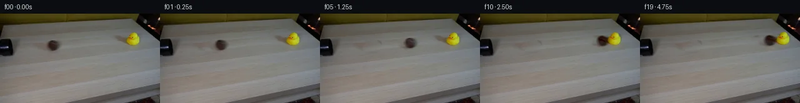

![首帧]()

Round 00
2026-11-04T19:37:16.427756+00:00像素候选变化代码 +305/−0inspection 更新
pixels 525afd7845849951 · code 37a330bf33d96e0e
查看本轮 generate.py 真实 diff
--- previous/generate.py
+++ current/generate.py
@@ -0,0 +1,305 @@
+"""Deterministic local pixel continuation of the supplied scene.
+
+No image viewing, network, learned model, or simulation/rendering engine is used.
+Run from this workspace: python generate.py
+"""
+from pathlib import Path
+import csv
+import hashlib
+import json
+import math
+
+import cv2
+import numpy as np
+from PIL import Image, ImageDraw
+from scipy.ndimage import binary_fill_holes, distance_transform_edt, gaussian_filter
+
+from artifact_io import save
+
+
+ROOT = Path(__file__).resolve().parent
+W, H, N, FPS = 256, 144, 20, 4
+SOURCE = np.asarray(Image.open(ROOT / 'first_frame.png').convert('RGB'))
+assert SOURCE.shape == (H, W, 3)
+original = SOURCE.astype(np.float64)
+yy, xx = np.mgrid[:H, :W].astype(np.float64)
+
+# Measurements from the original image, in output pixels.
+BX, BY, BR = 84.5, 51.2, 8.65
+DX, DY = 213.0, 50.0 # duck's ground-level rocking pivot
+PATH_SLOPE = -0.067
+GRAIN_SLOPE = -0.15338
+CONTACT_X = 194.9
+V0, ROLL_DECEL = 50.0, 4.0
+CONTACT_T = (V0 - math.sqrt(V0 * V0 - 2 * ROLL_DECEL * (CONTACT_X - BX))) / ROLL_DECEL
+CONTACT_V = V0 - ROLL_DECEL * CONTACT_T
+BALL_MASS, DUCK_MASS, RESTITUTION = 0.055, 0.045, 0.20
+BALL_OUT_V = (BALL_MASS - RESTITUTION * DUCK_MASS) / (BALL_MASS + DUCK_MASS) * CONTACT_V
+DUCK_OUT_V = (1 + RESTITUTION) * BALL_MASS / (BALL_MASS + DUCK_MASS) * CONTACT_V
+BALL_STOP_A, DUCK_STOP_A = 14.0, 22.0
+
+
+def ellipse(cx, cy, rx, ry):
+ return ((xx - cx) / rx) ** 2 + ((yy - cy) / ry) ** 2 <= 1
+
+
+# Include the source's soft object edges and long leftward table shadows.
+ball_footprint = ellipse(BX, BY, 11.3, 10.5) | ellipse(82.6, 53.0, 17.2, 8.7)
+yellow = ((original[:, :, 0] > 115) & (original[:, :, 1] > 80)
+ & (original[:, :, 0] > 1.6 * original[:, :, 2])
+ & (original[:, :, 1] > 1.5 * original[:, :, 2])
+ & (xx >= 201) & (xx <= 225) & (yy >= 28) & (yy <= 53))
+yellow = binary_fill_holes(yellow)
+duck_dist = distance_transform_edt(~yellow)
+duck_footprint = ((duck_dist <= 2.0) | ellipse(203, 42.0, 21.0, 8.0)
+ | ellipse(213.5, 50.0, 12.0, 4.0))
+ball_remove = gaussian_filter(ball_footprint.astype(float), 1.1)
+duck_remove = gaussian_filter(duck_footprint.astype(float), 1.1)
+
+
+def grain_fill(image, remove):
+ """Interpolate table colors along the measured wood-grain direction.
+
+ At every affected pixel, find the first unaffected donor on each side
+ along a grain line, then interpolate the two colors by distance. Only
+ original-image pixels supply color. Feathering restores exact pixels
+ outside the small removal region.
+ """
+ unsafe = remove > 0.0001
+ out = image.copy()
+ py, px = np.where(unsafe)
+ grid_x = px.astype(np.float32)
+ grid_y = py.astype(np.float32)
+ values, distances = [], []
+ for direction in [-1, 1]:
+ found = np.zeros(len(px), dtype=bool)
+ value = np.zeros((len(px), 3), dtype=np.float64)
+ distance = np.zeros(len(px), dtype=np.float64)
+ for step in range(1, 105):
+ sx = grid_x + direction * step
+ sy = grid_y + GRAIN_SLOPE * direction * step
+ is_inside = (sx >= 0) & (sx < W - 1) & (sy >= 0) & (sy < H - 1)
+ hit = cv2.remap(unsafe.astype(np.float32), sx[None], sy[None],
+ cv2.INTER_LINEAR, borderMode=cv2.BORDER_CONSTANT,
+ borderValue=1)[0] > 0.001
+ valid = (~found) & (~hit) & is_inside
+ if valid.any():
+ donor = cv2.remap(image.astype(np.float32), sx[None], sy[None],
… diff truncated; 218 more lines …